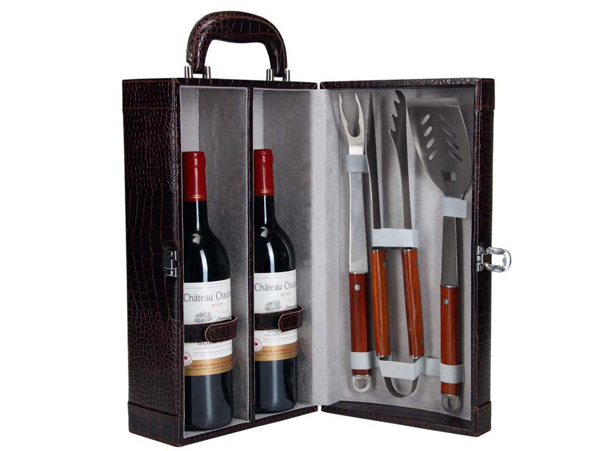

Набор для барбекю «Мускат»
Описание товара
Отличный подарок для любителей барбекю! В набор входит самое
необходимое для приготовления вкусной пищи на углях: лопатка, вилка
и щипцы. Принадлежности можно аккуратно упаковать в удобный
футляр, который к тому же имеет два отделения для бутылок.
Характеристики товара
| Цвет: | серебристый, коричневый |
|---|---|
| Материал: | искусственная кожа/металл/дерево |
| Размер товара: | 290×150×425 мм. |
| Вид нанесения: | шильд спектрум |
| Описание упаковки: | картонная коробка белого цвета |
| Количество в упаковке: | 1 шт |